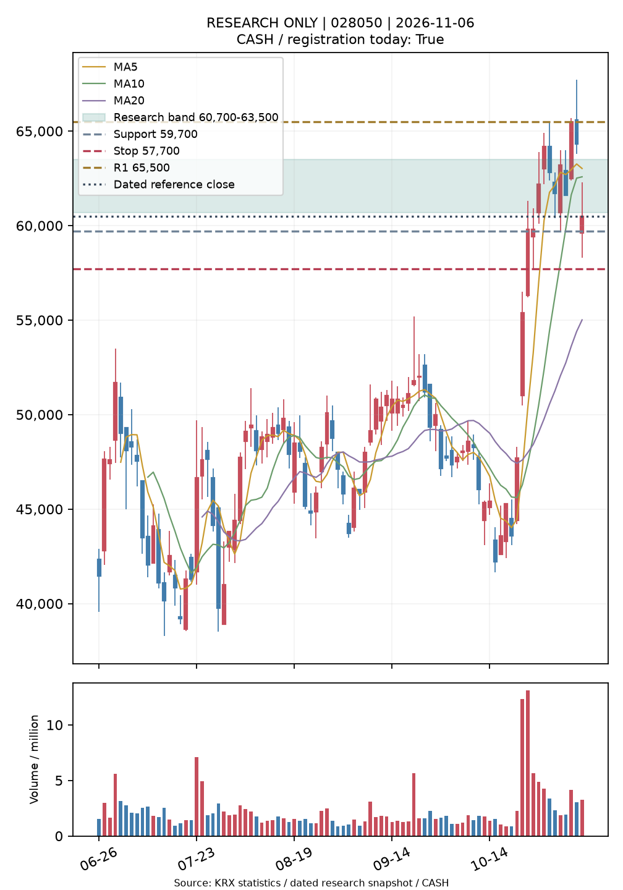
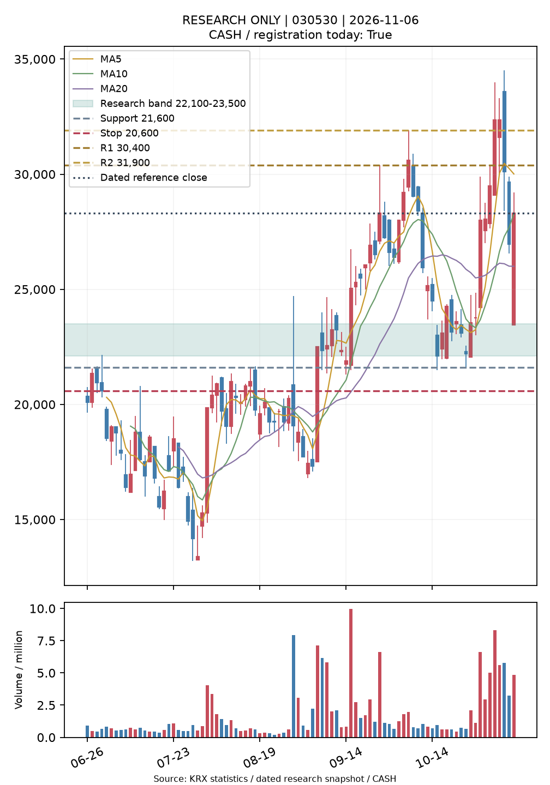

C3 전방 연구C3 연구용 TOP2·가상매매
실전 행동: CASH보고일 2026-11-06 · 가격 2026-11-06 · 신규 신호 4개
출처: 한국거래소 통계정보 · FINANCEDATA_KRX_CACHE · RESEARCH_VALIDATED
신규 가격 미확보 또는 신규 기간 전에는 지난 후보를 신규 결정으로 등록하지 않습니다. 종목 선정과 진입 성과를 분리하며 미완성 수익률은 미확정으로 둡니다.
운영 실행 검증
MAIN_AUTOMATIC_EVENT_OBSERVED
기본 브랜치 호출: True · 자동 이벤트: True · schedule: True
ChatGPT 알림 실제 전달은 미확인입니다. 기존 알림 설정은 변경하지 않았습니다.
| 종목 | 삼성E&A 028050 |
|---|
| 기준 거래일 | 2026-11-06 |
|---|
| 기준 종가 | 60,500원 |
|---|
| 선정 근거 | 시장 대비 RS20 +49.03%p · 5일 RS 개선 +3.48%p |
|---|
| 매수 관찰가 | 63,500원 |
|---|
| 연구 매수 범위 | 60,700원~63,500원 |
|---|
| 구조손절가 | 57,700원 |
|---|
| 손절 거리(범위 상단) | 9.13% |
|---|
| 1차 저항 | 65,500원 |
|---|
| 2차 저항 | 미확인 |
|---|
| 실전 행동 | CASH |
|---|

| 종목 | 원익홀딩스 030530 |
|---|
| 기준 거래일 | 2026-11-06 |
|---|
| 기준 종가 | 28,300원 |
|---|
| 선정 근거 | 시장 대비 RS20 +27.44%p · 5일 RS 개선 +0.33%p |
|---|
| 매수 관찰가 | 23,500원 |
|---|
| 연구 매수 범위 | 22,100원~23,500원 |
|---|
| 구조손절가 | 20,600원 |
|---|
| 손절 거리(범위 상단) | 12.34% |
|---|
| 1차 저항 | 30,400원 |
|---|
| 2차 저항 | 31,900원 |
|---|
| 실전 행동 | CASH |
|---|

B 후보 가상매매 성과
- 지지 지정가 · 5일: 완료 0개 / 순손익 미확정 / 손절 종료 0개 / 상태 {"PENDING_NEXT_SESSION": 2}
- 지지 지정가 · 10일: 완료 0개 / 순손익 미확정 / 손절 종료 0개 / 상태 {"PENDING_NEXT_SESSION": 2}
- 지지 지정가 · 20일: 완료 0개 / 순손익 미확정 / 손절 종료 0개 / 상태 {"PENDING_NEXT_SESSION": 2}
- 눌림 확인 다음 시가 · 5일: 완료 0개 / 순손익 미확정 / 손절 종료 0개 / 상태 {"NO_SIGNAL": 1, "PENDING_NEXT_SESSION": 1}
- 눌림 확인 다음 시가 · 10일: 완료 0개 / 순손익 미확정 / 손절 종료 0개 / 상태 {"NO_SIGNAL": 1, "PENDING_NEXT_SESSION": 1}
- 눌림 확인 다음 시가 · 20일: 완료 0개 / 순손익 미확정 / 손절 종료 0개 / 상태 {"NO_SIGNAL": 1, "PENDING_NEXT_SESSION": 1}
- 돌파 제한 매수 · 5일: 완료 0개 / 순손익 미확정 / 손절 종료 0개 / 상태 {"NO_SIGNAL": 2}
- 돌파 제한 매수 · 10일: 완료 0개 / 순손익 미확정 / 손절 종료 0개 / 상태 {"NO_SIGNAL": 2}
- 돌파 제한 매수 · 20일: 완료 0개 / 순손익 미확정 / 손절 종료 0개 / 상태 {"NO_SIGNAL": 2}
오류와 검증 한계
이번 실행에서 수집 오류 없음
신규 완료 표본이 없으면 성과 미확정입니다. 기존 과거 수익률은 재사용하지 않았습니다. 정규장 원천 인증·기업행위 전수 대조·기간 외 수익성은 별도 검증이 필요합니다.